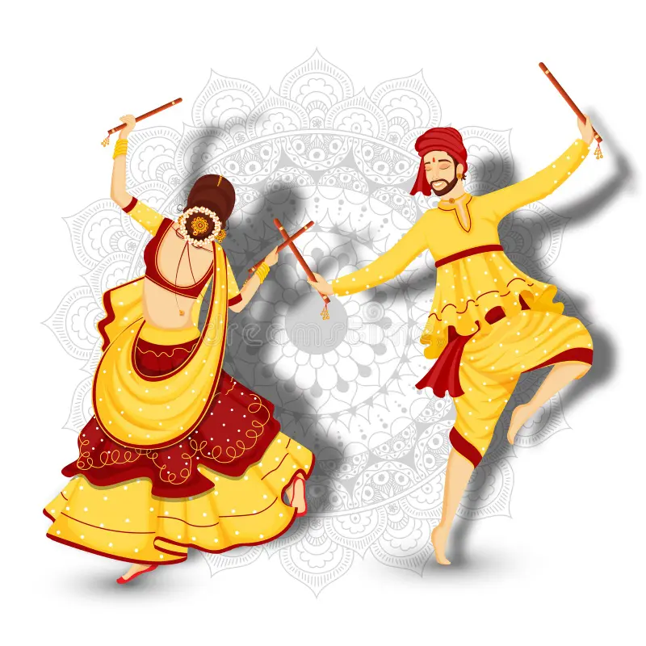

Garba is a traditional folk dance from the Indian state of Gujarat. It is most popularly performed during the Hindu festival of Navratri, a nine-night celebration dedicated to the goddess Durga (also worshipped in forms like Amba or Shakti). Garba is both a devotional and social dance form that combines rhythmic clapping, circular movements, colorful attire, and vibrant music.
garba music is lively and energetic. The main instruments used are:
During Garba (especially in Navratri), people wear traditional dress of Gujarat. Women: Chaniya Choli (long skirt, blouse, dupatta) with mirror work and heavy jewelry. Men: Kediyu (embroidered short kurta) with dhoti or churidar and a turban. The clothes are colorful and comfortable for dancing.
Garba is celebrated during the 9 days of Navratri, mainly in Gujarat.